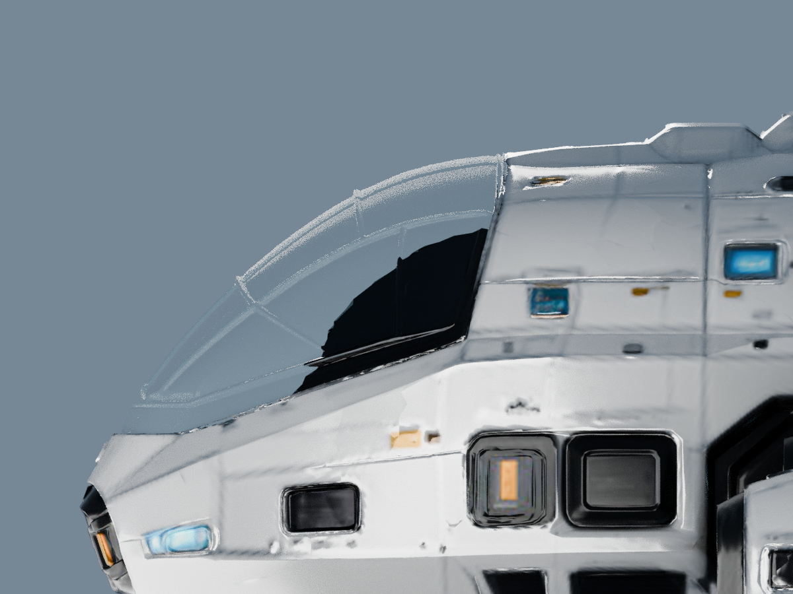
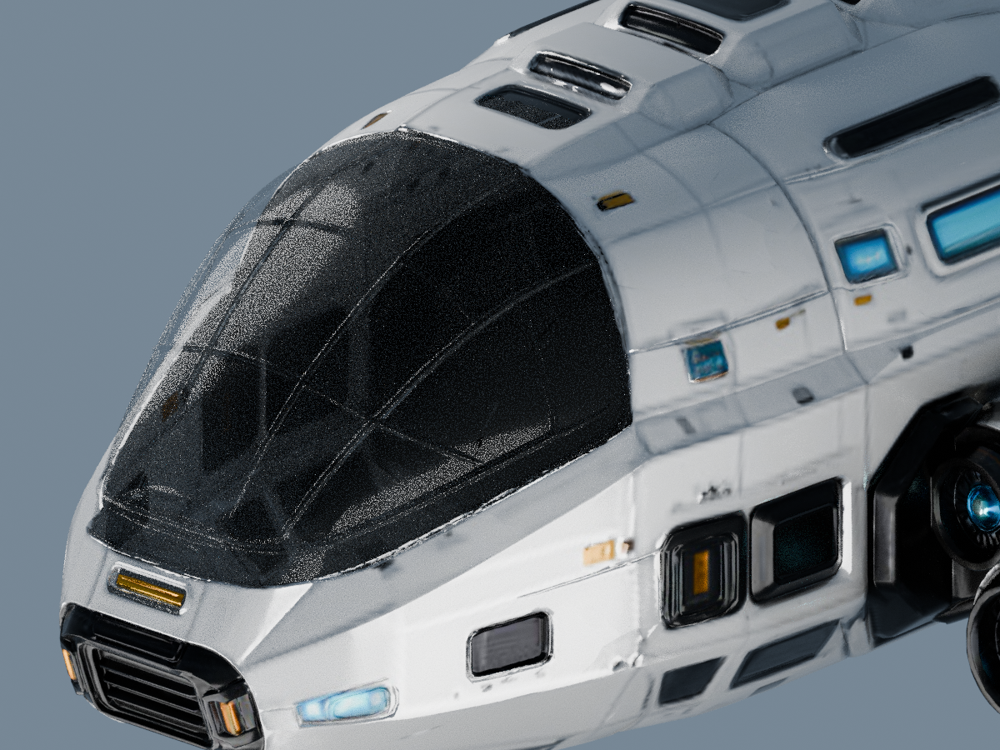
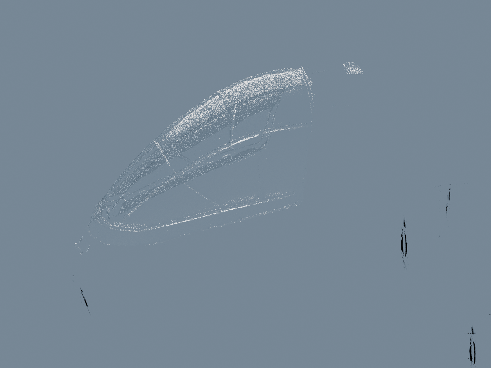

左右窗面改为独立透射玻璃；保留原船壳形状、窗框和原件。当前为待你确认的候选，未替换产品。

这些是实际 GLB 的离线渲染，没有用效果图替代模型。两侧均使用相同机位和灯光对照。
斜向下观察时仍可能看到舱内背面的阴影；“只看船壳 / 只看玻璃”可用于区分真实遮挡与玻璃反射。玻璃高光和边缘粗糙度仍由你判断。
3D 对照需从项目开发服务打开，并使用项目已有的 Three.js 依赖。静态对照可直接打开查看。
斜俯视仍能看到船壳内面的暗部；右侧的大面积白色是灯光反射。这里保留这些画面供判断，没有把整个船壳隐藏后当作最终合显效果。


可以先看上方对照。拖拽旋转、右键平移、滚轮缩放；WASD / 方向键移动，Q / E 升降。